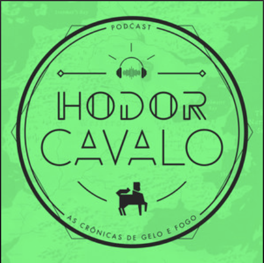
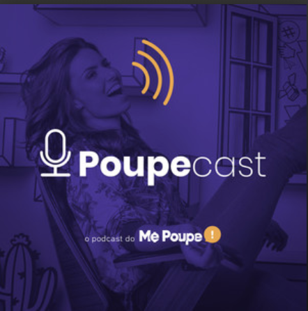
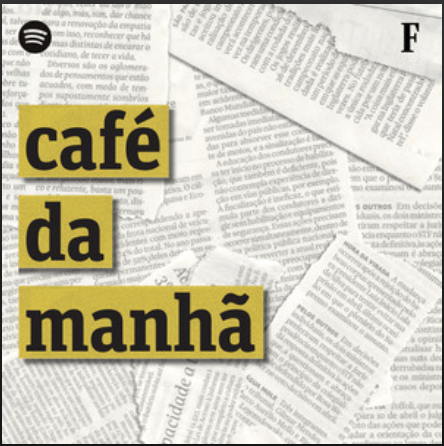
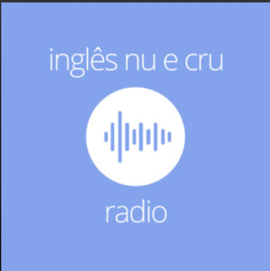
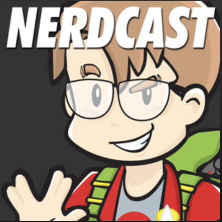

Os melhores Podcasts
por Leticia Rocha
Hodor Cavalo

Neste podcast quinzenal, discutimos As Crônicas de Gelo e Fogo, livros que inspiraram a série Game of Thrones.
Poupe Cast

O melhor podcasts de investimentos e assuntos financeiros!
Café da Manhã

O podcast mais importante do seu dia, com notícias fundamentais do Brasil e do mundo.
Durma com essa
Ouça sobre o fato mais instigante do dia — e que pode continuar a ecoar por aí.
inglês Nu e Cru

Aprenda inglês de uma forma diferente. Todos os dias um professor americano e uma brasileira falam sobre um tema para melhorar inglês de um jeito divertido e muito eficaz.
NerdCast

Tudo que um nerd gosta! A conversa é informal, divertida, escrachada e tão doida quanto séria. Quer dizer, tão séria quanto doida!